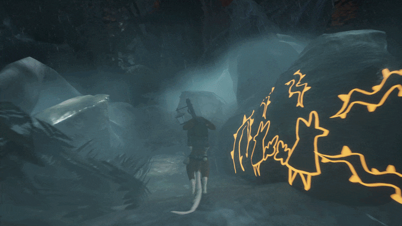
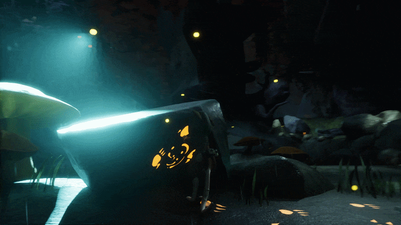

Eyes of the Forest
What Is Eyes of the Forest?
A third-person narrative stealth experience where players navigate a dangerous abandoned forest as Thistle, balancing exploration, tension, and environmental storytelling.
Eyes of the Forest is a narrative driven atmospheric third person experience, where you play as a mouse named Thistle. Navigate and stealth along the bottom of a dark and fantastical forest, with your raccoon mentor. Escape with an important artifact, while avoiding the horrific hunters that stalk the forest…
A four semester academic project — I joined our team, Reclamation, for their final two semesters. Created in Unreal Engine 5, about 20 minutes of gameplay, released on Steam.
My Roles
Joining Team Reclamation for their final two semesters, I served as a level designer and user researcher on a 26-person team — leading a full encounter overhaul, improving flow and pacing across the game, and contributing to a final polish sprint targeting a Steam release.
Level Designer
After onboarding, I joined forces with the game design team, composed of UX, UR, narrative, tech design disciplines, and three other level designers I worked closely with. I worked with our full 26 person team, leading a vast level overhaul for a problematic encounter.
I also made flow and pacing level changes throughout the game. All while supporting other designers and working closely with engineering and environment artists to deliver a functional, engaging experience in polished and tested spaces.
The second half of my time with Eyes of the Forest was on a reduced 4 person strike team, focusing on final level and UX polish, getting the experience Steam ready, and conducting a final marketing push! During this phase, I helped fix level streaming issues, refined the difficulty curve, set dressed and beautified level spaces, integrated tutorialization UI, and improved overall level cohesion through precise tweaks throughout the game.

User Researcher
Though I was primarily serving a level design role, I also served a secondary user research role. I helped coordinate playtesting events, and worked with two other user researchers to conduct an eye-tracking study measuring how 13 players perceived suspense, difficulty, and various visual aspects of our game. My UR teammates and I cleaned and coded the resulting data, and subsequently presented an actionable UR report to our team.
I also facilitated public pre-release playtesting at the WA state gaming expo February of 2026, testing over 50 convention goers over the course of the weekend in a public expo floor!

Level Design Process
My process on Eyes of the Forest spanned a ground-up encounter rebuild, pacing and flow improvements across the full game, and a final polish sprint. Read on for an in-depth look at how I approached each phase.
For an in-depth look at one of my principal level design contributions to this project, check out my blog post exploring the process of rebuilding an encounter in Eyes of the Forest.
The post dives into my steps, process, and outcome for the ground up endeavor of rebuilding encounter 3:
Preproduction, Top-Down Maps & Planning
Top down planning, defining scope, identifying spatial archetypes to use, and plotting level beats on paper is always an important and foundational step of the level design process.
Because I was rebuilding an encounter from scratch, I created this top down map to reflect my vision, and serve as the blueprint for working in engine.

But because I joined this project halfway into development, the remainder of my tasks outside of rebuilding Encounter 3 involved little pre-production, as most of our spaces were already created.
My other level design responsibilities involved sculpting and streamlining sections of the game here and there, and tackling individual problems and areas that needed love throughout our expansive level spaces.
Not to say there was no preparation or preproduction for these tasks, but more so the extent of my planning was not as vast as the larger tasks already completed. This next section dives into some of these more bite-sized level design samples and individual areas I worked on!
Iterating in Engine & Completing Tasks
After the bulk of my work on Encounter 3 was complete, I took on a handful of other tasks. Some larger and more daunting, like making the town area feel dense with houses and like it was once alive. Other tasks, like tweaking pacing, level beats, and shaping intentional compositions, were all bite-sized chunks of work I knocked out. I also made significant gameplay changes to Encounters 2, 3, and 4 within Eyes of the Forest. This is some of the level design work I feel most proud of from this project:
Making The Town Feel Authentic
One of the first locations the player discovers along their journey is an abandoned town. But something here wasn't working right…
Problems:
- The town felt empty — only a few houses along the golden path, blank midgrounds, leading to a desolate, bland feeling space.
- The guidance was lacking, and players often got turned around or confused on where to go next.
- There were softlocks, inconsistent environment assets, and (to put it bluntly), the whole dump just needed a makeover!

Solutions:
- I added dozens of more houses, structures, and ancient signs of life in the background, foreground, and midground spaces. Hundreds of critterfolk like Thistle (the game's protagonist) used to live here, so let's show their former presence!
- I implemented the broken statue as a focal point for the space. It is a dominant feature that draws the player in, and is emphasized in a cinematic sequence.
- I fixed softlocks, improved guidance via placing lamp posts, fireflies, pathway texturing, and using the level geometry to lead the player's eye where they need to go!

Improving Encounter 2
The lead up to the second encounter of the game needed a hand with pacing, as well as the second half of the encounter was in need of some variety in gameplay choices.
Problems:
- The composition at the beginning of the encounter didn't frame the hunter, and didn't build appropriate tension for the upcoming segment of gameplay. The player needed to feel like a lonely and lost mouse that just stumbled their way into a treacherous hunting ground. So how can I support that through the level design?
- Guidance elements, size of cover objects, leading lines, and foliage all needed tweaks.
- The second half of the encounter was another straight flat run, almost exactly like the one before it. There needed to be some variety and something that evolved the space. And I had just the idea…

Solutions:
- I tweaked the flow of the pathway the player takes to arrive at the beginning of this encounter.
- I made it more claustrophobic and winding, using verticality to vary the terrain. I also added a dead end here that forces the player to turn around and recompose themselves before proceeding, reinforcing the intended user feeling of uncertainty and unsteadiness.

Some players didn't know which way to head once they got into the open space of the encounter proper, now under the pressure of the hunter's spotlight. To reduce the amount of people who would wander the wrong way into needless and frustrating deaths, we found a very useful solution:
Glowing paw decals placed on the ground draw the player's eye and encourage them to head in the direction the paws point. This is a trick we used here and in many other places in the game!
Used subtly, these pawprints give players direction and a little goal to arrive at.
Using the paws too frequently diminishes their effectiveness, so finding the right balance of when to and when not to use these paw decals was interesting to discover and iterate upon!

The final stretch of this encounter was originally a flat stretch, with only one option. Run for it! So what if we gave the player some more agency instead? To suit different playstyles, I implemented two options:
- Option 1: dip down and sprint through the last stretch, risking exposure to the hunter, but getting out faster!
- Option 2: take a more covered approach, and crouch through a fallen hollow log to safety.


Providing the player with varying options on how to proceed helps enrich the space, and provide meaningful choices that suit different playstyles! Designing with multiple solutions is a lesson and a practice that working on this project constantly reminded me the importance of!
Polish & Final Touches
After the tribulations of testing, iterating, and eventually feeling decent enough about the quality and effectiveness of our work, we locked in on final polish and finishing touches phase. These are some of the final polish tasks we completed:
- Filling out foliage and improving consistency
- Tweaking terrain textures to be more subtle
- Tweaking assets that would be shown off in cutscenes still being added to the game. IE, since the camera points at this wall during this cutscene, I'll make the wall look more populated.
- Lots of patching in holes in the trees that reveal the skybox. To save performance, we removed lots of high poly 3D trees, and replaced them with 2D tree billboards that filled out the backgrounds, improving immersion.
Production Details
Scope
Eyes of the Forest is a four semester academic project built in Unreal Engine 5 by Team Reclamation, a 26-person team. I joined the team for their final two semesters of development.
The experience features approximately 20 minutes of gameplay, a fully realized narrative, and a third-person stealth core built around the perspective of Thistle — a small mouse navigating a vast and dangerous forest floor.
Eyes of the Forest is released on Steam, with 22,000+ downloads.
Team Collaboration
Working within a 26-person team across design, engineering, art, and narrative disciplines required constant cross-functional communication. I coordinated closely with environment artists to ensure level spaces were populated with the right assets at both macro and micro scales — from terrain layout down to individual prop placement.
I worked with engineers and tech designers on gameplay integrations such as trigger placements, checkpoint logic, level streaming fixes, and ensuring that gameplay beats functioned correctly across each encounter.
Collaborating with our UX and narrative designers helped me ensure that the spatial story my level spaces told aligned with the broader emotional and narrative arc of the game.